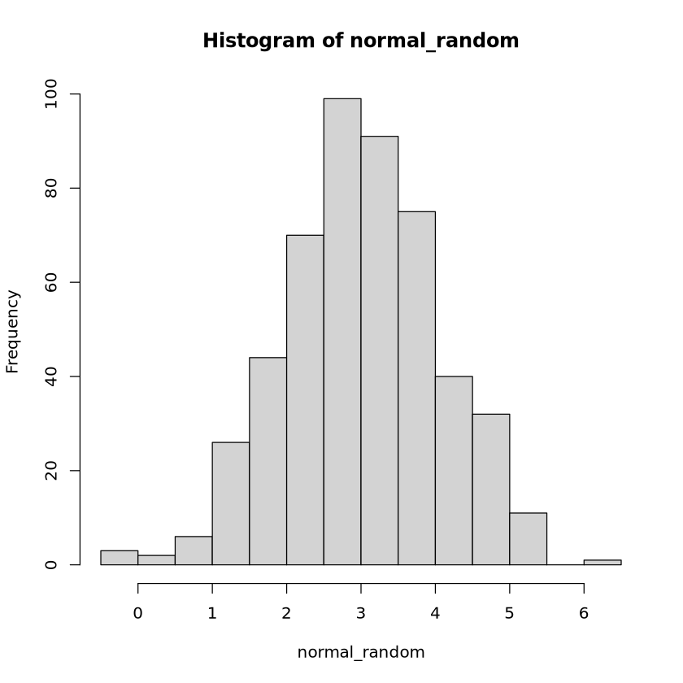
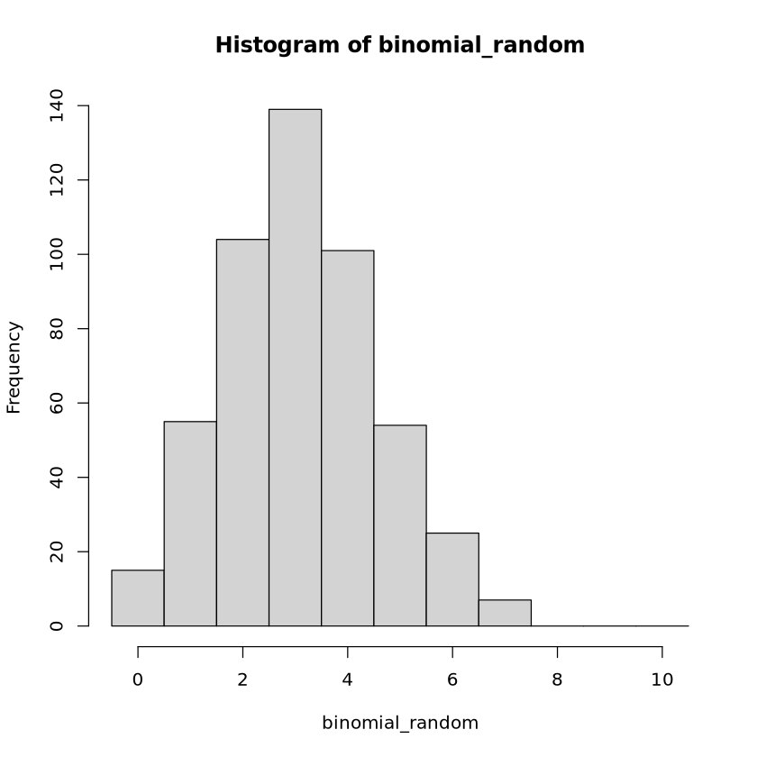

normal_random <- rnorm(n = 500, mean = 3)
hist(normal_random)
이상민
April 5, 2025
- 표본추출, 히스토그램
- 표본평균
- 표본추출, 히스토그램
- 표본평균
- 표본추출, 히스토그램
size : n, prob = p 에 대응되므로 평균을 10 X 0.3 = 3으로 설정binomial_random <- rbinom(n = 500, size = 10, prob = 0.3)
hist(binomial_random, breaks = seq(-0.5, 10.5, by = 1))
- 표본평균
- 표본추출, 히스토그램
shape : \(\alpha\), rate : \(\frac{1}{\beta}\) 에 대응- 표본평균
- 표본추출, 히스토그램
- 표본평균
- 표본추출, 히스토그램
- 표본추출, 히스토그램
- 표본평균, 표본분산
- 표본추출, 히스토그램
shape : \(\alpha\), rate : \(\frac{1}{\beta}\) 에 대응- 표본평균, 표본 분산
- 표본 공분산 = 4.138
- 표본 상관계수 = 0.442
- 표본 상관계수 = -0.442